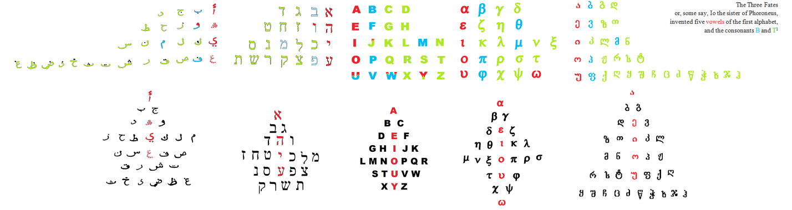
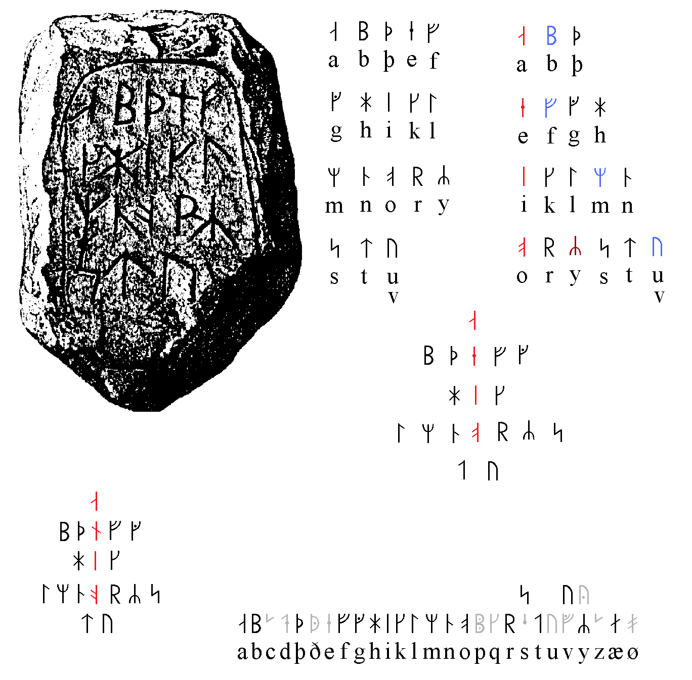
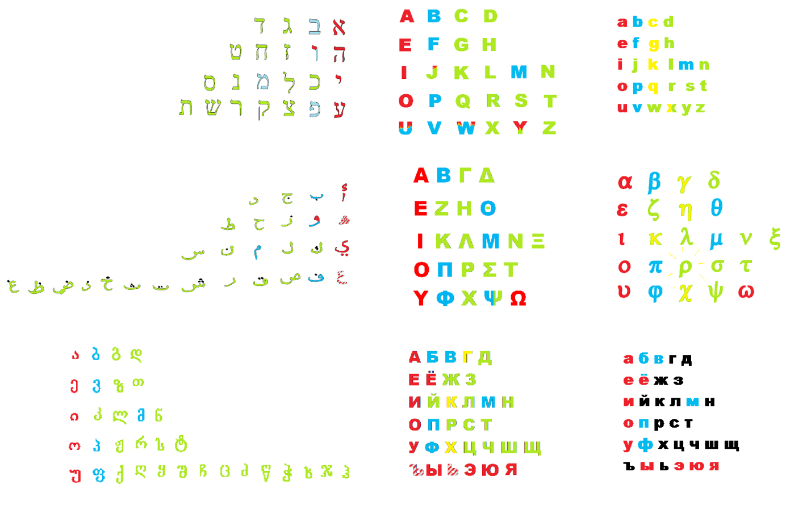
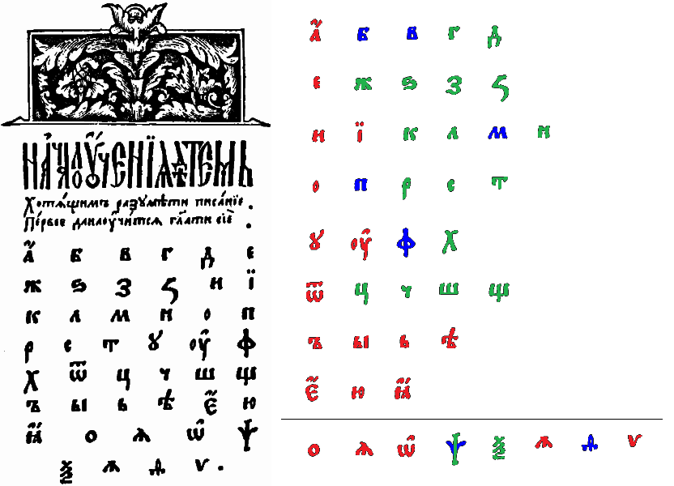
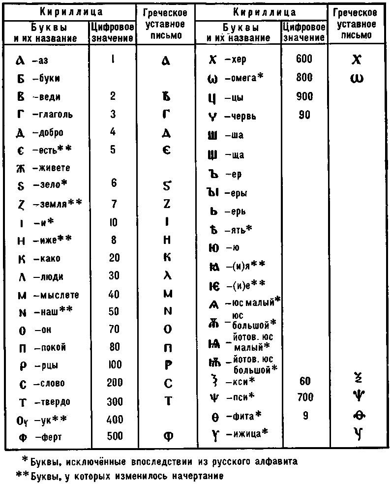
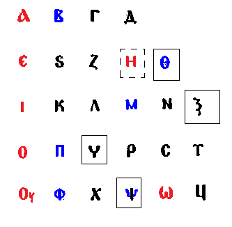
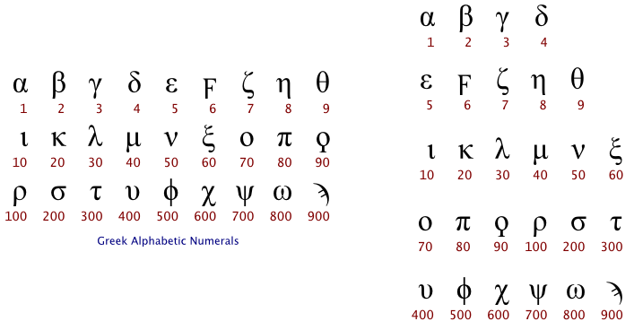

I left this piece underedited, it had to be all large letters, but now I ask myself why do I empty my trashbin here? these texts never made it to the book, so why keep them? just in case, just so I don't have to worry about my computer that much, or of these particular files, for some reason I saved them, and many of them are not worse than the most of those paper drafts. So no matter how embarassing, I have to show how drafts are to be published (all of them, edited or not is another topic)
Hebrew alphebet then. They try to make it the most ancient by teaching us Phoenician alphabet being the most ancient, *but jews are known all over the world trycky tricky trickie yeah Let them be that way that way we love them it's easy to hate either. The truth is Egyptians had alphabet among their hieroglyphics (they first put a word in alphabetic and syllabic symbols, then follow it with pictographic symbol to manage homonyms**) – now I wonder could you read the text picking the pictograms only
But they shouldn't be trying so hard because its structure shows it is the most ancient of all the alphabets. Runic alphabet as present on Bornholm stone and suddenly found in von List aramanen runes maybe even more primitive (3-4-5-6 and may come in three aettir of dice instead of 4-5-6-7 this one may come in four dice with two numberless "jokers"***), but hebrew has only one exception, the M out of labial column.

And here's that Bornholm stone, okay

In official linguistics it's considered to be some imitation of Roman script, and in archaic Latin there's V being the final letter of the alphabet (as in old-Russian, izhitsa looks quite like that. And Greek N looks like that. And it's N that would be the final letter if we consider the fourth row being of a later genesis. Which makes sense if we compare abjd to alphabets which have an extra row, and Russian alphabet goes even further than that:
 Here's Russian alphabet in the right bottom corner in comparison with other alphabets, and it looks like it really derived from the Greek: not only does it have Г in the first row, not only has it many graphical conformities, but also the last greek row, different from Latin, may be compared to the Russian two: YФХ as УФХ, Ψ graphically reminding both Ч (the way Ц used to be written in the past actually) and Ш (being in the same claster with Щ) And Ω kind of represent the vowel row (just as V stood both vowel and labial in the extra row, Ω is the extra row, it looks like Ѫ (юс) which used to stand in that row that used to be even longer, and all of them vowels except the degraded θ stuck in there in spite of its numerical value.

The stroke shows pretty much where does modern alphabet ends. So everything that follows could stand 1.5 intervals off because they were invariants of the previous letters with Я being IA and as their numeric system wasn't decimal, it could stand for the next order as Ī stood for 1000.
But that all is speculative, let's compare
this primer to the numbers:
 
In accaunt of numerals Russian does remind the Greek canon more. With Ц like that sampi the greek numerals have:

As we compare them like this it becomes obvious here official point of view was correct (if those tables of numerals above are correct, of course)
Then the question is what is that missing letter the modern latin alphabet is missing? Is it θ of some Thor?
This list may be useless for you
* после того как чуть не дропнул писать большую вещь, понял:
план работ убивает творческое начало. ебать гос.службу ебать
буду писать как пишется и если вдруг замечу что знаю каким будет следующее предложение, удаляю планомерно написанное и начинаю с того места где загнался в стандарт.
Let it grow like a tree not some construction of planks and nails.
**нахуя писать лекции когда в науке такие пиздецовые слова. ебать гос.вузы ебать (yep, not native speaker, that's what it is for, to see a spy. militaries rule the world would you expect to avoid them here, oh no boy you won't be avoided or will you. what does it take to be avoded by them? to be useful more than harmful? yea.. they like fruit o fprogress too)
***all of the sudden first cards are believed to be 32 dominos printed on paper. And dominos do represent dice coming by two (with empty slots two, yea, no-no-no bro, chinese dominos don't have no empty slots it would make.. but all of the sudden sino-european dominoes, those with empty slots have 28 pieces and 28 letters are in arabic alphabet) and 32 may be of alphabet, like russian for example. only russian has 33 letters now, and 32 letters alphabet is farsi. Persian culture couldn't come unnoticed. I think I knew they were the inventors of what we know as arabic script – all the scientists arabs are proud of are not arabs at all. (and after I said no-no-no in the grey area it's not so univocal)